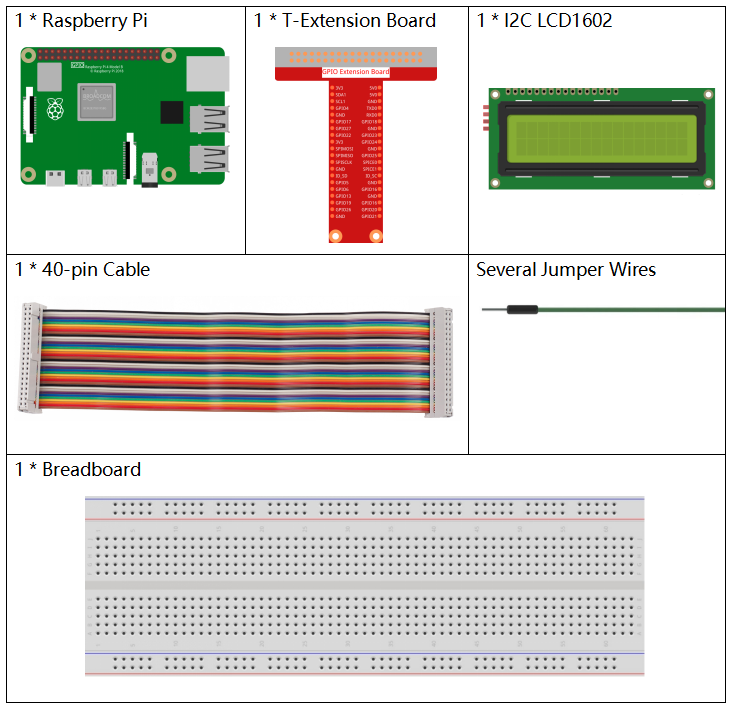
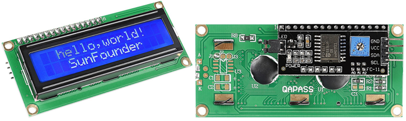
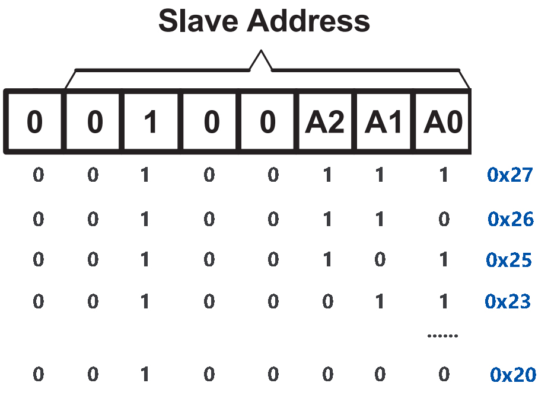

Nota
¡Hola! Bienvenido a la Comunidad de Entusiastas de SunFounder Raspberry Pi, Arduino y ESP32 en Facebook. Profundiza en Raspberry Pi, Arduino y ESP32 junto a otros entusiastas.
¿Por qué unirse?
Soporte Experto: Resuelve problemas post-venta y desafíos técnicos con la ayuda de nuestra comunidad y equipo.
Aprender y Compartir: Intercambia consejos y tutoriales para mejorar tus habilidades.
Avances Exclusivos: Accede anticipadamente a anuncios de nuevos productos y avances.
Descuentos Especiales: Disfruta de descuentos exclusivos en nuestros productos más nuevos.
Promociones Festivas y Sorteos: Participa en sorteos y promociones navideñas.
👉 ¿Listo para explorar y crear con nosotros? Haz clic en [Aquí] y únete hoy!
1.1.7 LCD1602 I2C
Introducción
El LCD1602 es un tipo de pantalla de cristal líquido que puede mostrar 32 (16*2) caracteres al mismo tiempo.
Componentes
Principio
LCD1602 I2C
{kind=link}
GND: Tierra
VCC: Suministro de voltaje, 5V.
SDA: Línea de datos en serie. Conéctala a VCC a través de una resistencia de pull-up.
SCL: Línea de reloj en serie. Conéctala a VCC a través de una resistencia de pull-up.
Como todos sabemos, aunque el LCD y algunas otras pantallas enriquecen enormemente la interacción hombre-máquina, comparten una debilidad común. Cuando se conectan a un controlador, múltiples pines de E/S serán ocupados por el controlador, que no tiene tantos puertos externos. Además, esto restringe otras funciones del controlador.
Por lo tanto, se ha desarrollado el LCD1602 con un módulo I2C para resolver este problema. El módulo I2C tiene un chip PCF8574 integrado que convierte los datos en serie I2C a datos paralelos para la pantalla LCD.
Dirección I2C
La dirección predeterminada es, básicamente, 0x27, aunque en algunos casos puede ser 0x3F.
Tomando como ejemplo la dirección predeterminada de 0x27, la dirección del dispositivo puede modificarse conectando las almohadillas A0/A1/A2; en el estado predeterminado, A0/A1/A2 es 1, y si la almohadilla está conectada, A0/A1/A2 es 0.
{kind=link}
Retroiluminación/Contraste
La retroiluminación se puede habilitar mediante un capuchón de puente, desenchufa el capuchón para desactivar la retroiluminación. El potenciómetro azul en la parte posterior se utiliza para ajustar el contraste (la relación de brillo entre el blanco más brillante y el negro más oscuro).

Capuchón de Puente: La retroiluminación se puede habilitar mediante este capuchón, desenchufa este capuchón para desactivar la retroiluminación.
Potenciómetro: Se utiliza para ajustar el contraste (la claridad del texto mostrado), que aumenta en dirección horaria y disminuye en dirección antihoraria.
Diagrama Esquemático
T-Board Name |
physical |
SDA1 |
Pin 3 |
SCL1 |
Pin 5 |

Procedimientos Experimentales
Paso 1: Construye el circuito.

Paso 2: Configura I2C (ver Configuración de I2C. Si ya has configurado I2C, omite este paso.)
Paso 3: Cambia de directorio.
cd ~/davinci-kit-for-raspberry-pi/c/1.1.7/
Paso 4: Compila.
gcc 1.1.7_Lcd1602.c -lwiringPi
Paso 5: Ejecuta.
sudo ./a.out
Después de ejecutar el código, podrás ver "Greetings", "From SunFounder" mostrando en el LCD.
Nota
Si aparece un mensaje de error
wiringPi.h: No such file or directory, consulta Instalar y Verificar wiringPi.Si recibes el error
Unable to open I2C device: No such file or directory, debes consultar Configuración de I2C para habilitar I2C y verificar si el cableado es correcto.Si el código y el cableado están bien, pero el LCD aún no muestra contenido, puedes girar el potenciómetro en la parte trasera para aumentar el contraste.
Código
#include <stdio.h>
#include <wiringPi.h>
#include <wiringPiI2C.h>
#include <string.h>
int LCDAddr = 0x27;
int BLEN = 1;
int fd;
void write_word(int data){
int temp = data;
if ( BLEN == 1 )
temp |= 0x08;
else
temp &= 0xF7;
wiringPiI2CWrite(fd, temp);
}
void send_command(int comm){
int buf;
// Envía primero bit7-4
buf = comm & 0xF0;
buf |= 0x04; // RS = 0, RW = 0, EN = 1
write_word(buf);
delay(2);
buf &= 0xFB; // Hace EN = 0
write_word(buf);
// Envía segundo bit3-0
buf = (comm & 0x0F) << 4;
buf |= 0x04; // RS = 0, RW = 0, EN = 1
write_word(buf);
delay(2);
buf &= 0xFB; // Hace EN = 0
write_word(buf);
}
void send_data(int data){
int buf;
// Envía primero bit7-4
buf = data & 0xF0;
buf |= 0x05; // RS = 1, RW = 0, EN = 1
write_word(buf);
delay(2);
buf &= 0xFB; // Hace EN = 0
write_word(buf);
// Envía segundo bit3-0
buf = (data & 0x0F) << 4;
buf |= 0x05; // RS = 1, RW = 0, EN = 1
write_word(buf);
delay(2);
buf &= 0xFB; // Hace EN = 0
write_word(buf);
}
void init(){
send_command(0x33); // Debe inicializar en modo de 8 líneas primero
delay(5);
send_command(0x32); // Luego inicializa en modo de 4 líneas
delay(5);
send_command(0x28); // 2 Líneas y 5*7 puntos
delay(5);
send_command(0x0C); // Habilita la pantalla sin cursor
delay(5);
send_command(0x01); // Limpia la pantalla
wiringPiI2CWrite(fd, 0x08);
}
void clear(){
send_command(0x01); //limpia la pantalla
}
void write(int x, int y, char data[]){
int addr, i;
int tmp;
if (x < 0) x = 0;
if (x > 15) x = 15;
if (y < 0) y = 0;
if (y > 1) y = 1;
// Mueve el cursor
addr = 0x80 + 0x40 * y + x;
send_command(addr);
tmp = strlen(data);
for (i = 0; i < tmp; i++){
send_data(data[i]);
}
}
void main(){
fd = wiringPiI2CSetup(LCDAddr);
init();
write(0, 0, "Greetings!");
write(1, 1, "From SunFounder");
}
Explicación del Código
void write_word(int data){……}
void send_command(int comm){……}
void send_data(int data){……}
void init(){……}
void clear(){……}
void write(int x, int y, char data[]){……}
Estas funciones se utilizan para controlar el código fuente del LCD1602 I2C. Nos permiten usar fácilmente el LCD1602 I2C. Entre estas funciones, init() se usa para la inicialización, clear() se usa para limpiar la pantalla, write() se utiliza para escribir lo que se muestra, y las otras funciones respaldan las anteriores.
fd = wiringPiI2CSetup(LCDAddr);
Esta función inicializa el sistema I2C con el símbolo del dispositivo especificado. El prototipo de la función:
int wiringPiI2CSetup(int devId);
Los parámetros devId son la dirección del dispositivo I2C, que se puede encontrar mediante el comando i2cdetect (ver Apéndice) y la devId del I2C LCD1602 es generalmente 0x27.
void write(int x, int y, char data[]){}
En esta función, data[] es el carácter que se imprimirá en el LCD, y los parámetros x e y determinan la posición de impresión (la línea y + 1, columna x + 1 es la posición inicial del carácter a imprimir).